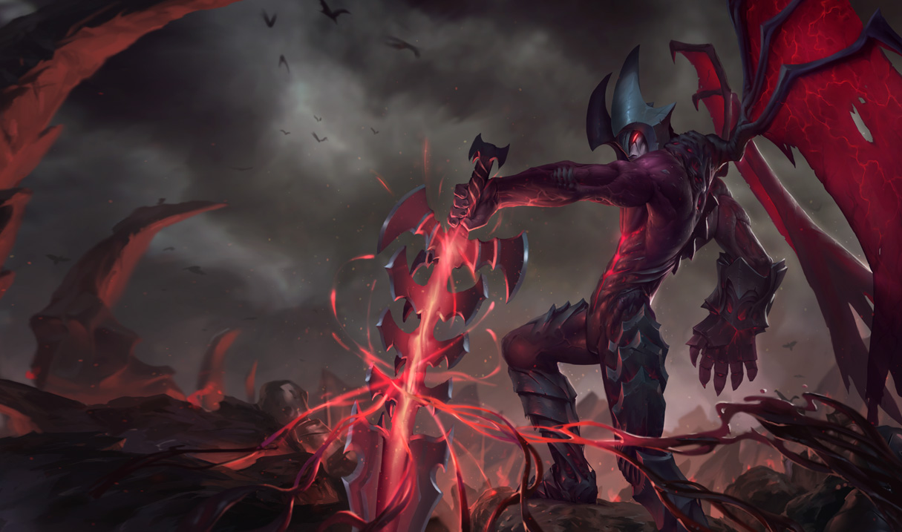
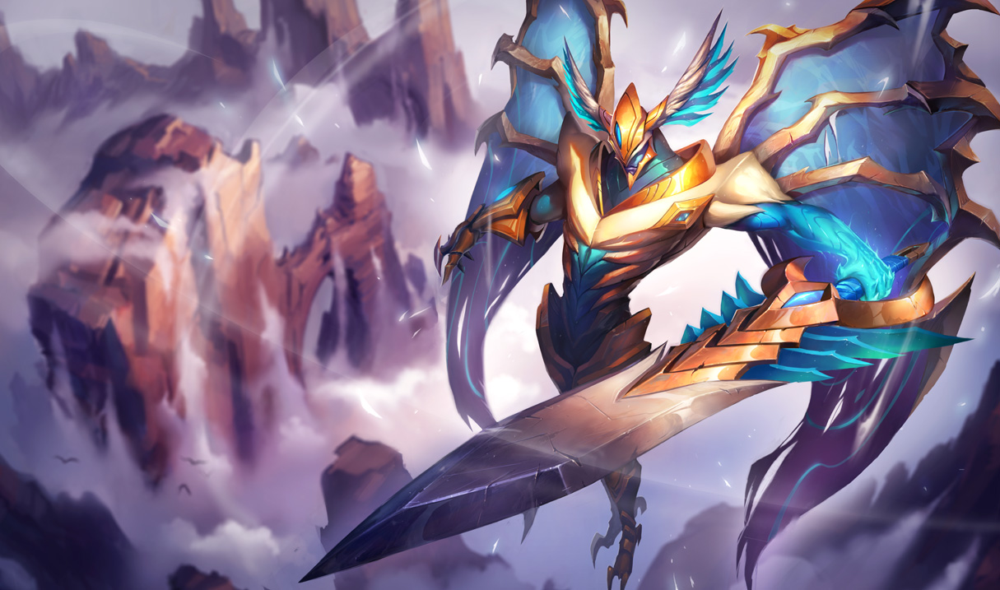
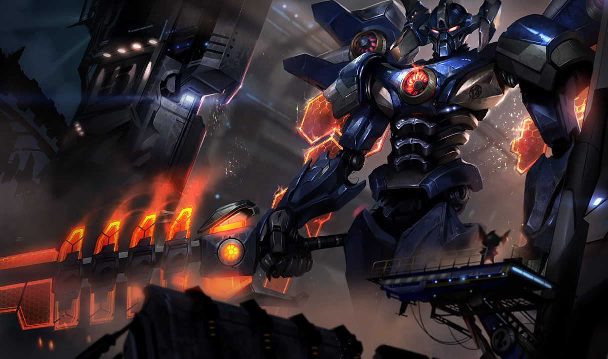
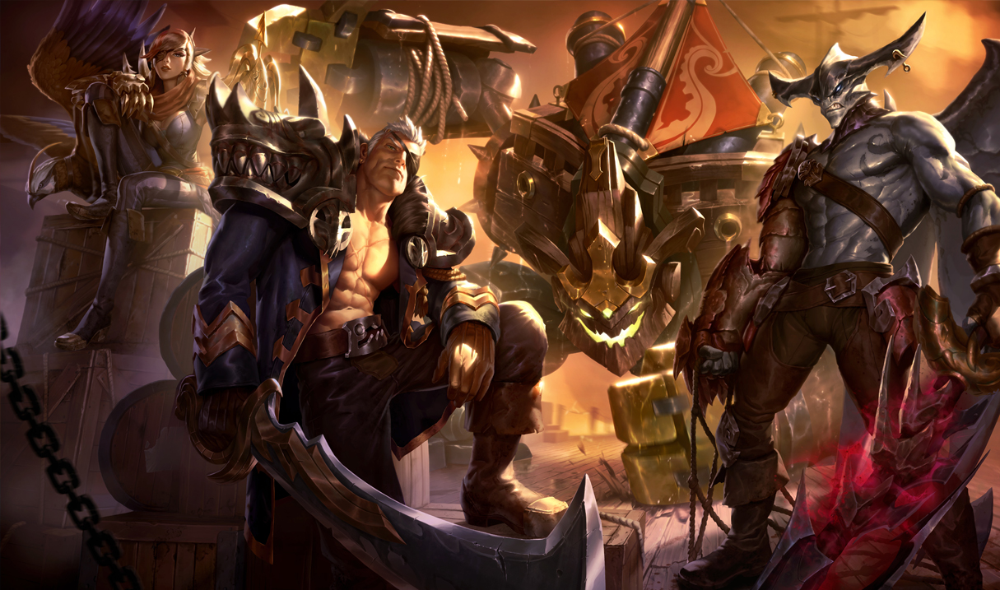

Aatrox a Espada Darkin
Vida: 537.8 (+85 por nível)
Dano de Ataque: 60.376 (+3.2 por nível)
Velocidade de Ataque: 0.651 (+3% por nível)
Velocidade de Movimento: 345
Regeneração de Vida: 6.59 (+0.5 por nível)
Armadura: 24.384 (+3.8 por nível)
Resistência Mágica: 32.1 (+1.25 por nível)

Poço de Sangue
Ao usar uma habilidade que tenha custo de Vida, Aatrox armazena o dano auto infligido no Poço de Sangue. Ao receber dano letal, Aatrox extrai o sangue atual do poço e o recupera em forma de Vida ao longo de uma breve duração. Além disso, Aatrox recebe 1% de Velocidade de Ataque para cada 2% de sangue que houver no poço.

Voo Sombrio
Custo: Custa 10% da Vida atual
Alcance: 600
Aatrox levanta voo e se joga em um local alvo, causando dano e lançando ao ar inimigos no centro do impacto.
Aatrox levanta voo e golpeia o chão no local alvo, causando 70/115/160/205/250 (+60% de Dano de Ataque Bônus) de Dano Físico a todos os inimigos próximos e arremessando ao ar por 1 segundos os alvos no centro do impacto.

Sede de Sangue / Preço em Sangue
Custo: Sem custo
Alcance: Si mesmo
Enquanto ativado, Aatrox causa dano bônus a cada três ataques, ao custo de sua própria Vida. Enquanto desativado, Aatrox restaura Vida a cada três ataques.
Enquanto desativado, Aatrox se beneficia de Sede de Sangue. Enquanto ativado, Preço em Sangue é ativado e remove Sede de Sangue.
Sede de Sangue: Todo terceiro ataque de Aatrox restaura 20/25/30/35/40 (+25% de Dano de Ataque Bônus) de Vida, aumentando para 200% caso esteja com menos de metade da Vida.
Preço em Sangue: Todo terceiro ataque de Aatrox causa 60/95/130/165/200 (+100% de Dano de Ataque Bônus) de Dano Físico adicional e gasta de Vida.

Lâminas da Aflição
Custo: Custa 5% da Vida atual
Alcance: 1000
Aatrox desfere um poderoso golpe de espada, causando dano e lentidão a todos os inimigos atingidos.
Aatrox desfere o poder de sua espada, causando 75/110/145/180/215 (+60% de Poder de Habilidade) (+60% de Dano de Ataque Bônus) de Dano Mágico a todos os inimigos atingidos e lhes causa 40% de lentidão por 1.75/2/2.25/2.5/2.75 segundos.

Massacre
Custo: Sem custo
Alcance: 550
Aatrox colhe o sangue de suas vítimas, causando dano a todos os campeões inimigos ao seu redor e recebendo aumento de Velocidade de Ataque e de Alcance de Ataque por um curto período.
Aatrox colhe o sangue de suas vítimas, causando 200/300/400 (+100% de Poder de Habilidade) de Dano Mágico a todos os campeões inimigos ao seu redor. Em seguida, Massacre preenche o Poço de Sangue de Aatrox em 20% para cada campeão atingido e lhe concede 40/50/60% de Velocidade de Ataque e 175 de Alcance de Ataque por 12 segundos.
História
Aatrox é um guerreiro lendário, um dos cinco restantes de uma raça antiga conhecida como Darkin. Ele empunha sua massiva espada com graça e pompa, dilacerando legiões inteiras com um estilo hipnótico a se contemplar. Com cada adversário derrubado, a lâmina vívida de Aatrox bebe de seu sangue, fortalecendo-o e alimentando sua campanha brutal e elegante de carnificina.
A primeira das lendas de Aatrox é tão velha quanto a própria história. Ela fala de uma guerra entre duas grandes facções lembradas somente como o Protetorado e os Senhores Arcanos. Ao longo do tempo, os Senhores Arcanos venceram uma série de vitórias esmagadoras, deixando-os prestes a obliterar seus inimigos declarados para sempre. No dia do confronto final, o exército do Protetorado se viu em desvantagem, exaustos e mal equipados. Eles já aceitavam a inevitável derrota.
Justamente quando toda a esperança parecia estar perdida, Aatrox apareceu entre os soldados do Protetorado. Com pouco mais que algumas palavras, ele reergueu os soldados para lutar até o último minuto, antes de se jogar no confronto. Sua presença inspirou os guerreiros desesperados. A princípio, eles somente assistiam, espantados, conforme esse guerreiro desconhecido abria caminho através dos inimigos com seu corpo e espada se movendo em uníssono, como se fossem um só. Logo, os guerreiros se perceberam tomados com uma potente sede pela batalha. Seguiram Aatrox na luta, cada um deles lutando com a força furiosa de dez até que alcançaram uma vitória muito improvável.
Aatrox desapareceu depois daquela batalha, mas a recém descoberta fúria do exército do Protetorado permanecia. Seu surpreendente triunfo os levou a muitos outros, até que eles finalmente conseguiram voltar para casa vitoriosos. Seus compatriotas os chamaram de heróis, mas, embora eles tenham salvado sua civilização inteira da destruição, a escuridão permeava a mente de cada guerreiro. Algo dentro deles havia mudado. Com o passar do tempo, suas memórias da batalha se desfizeram, sendo substituídas por uma revelação repugnante: seus atos de heroísmo foram, na verdade, atrocidades brutais cometidas pelas suas próprias mãos.
Contos como esse aparecem nos mitos de muitas culturas. Se há de se acreditar em todos eles, então a presença de Aatrox mudou o curso de algumas das mais importantes guerras da história. Embora essas histórias o retratem como um salvador em momentos ruins, o verdadeiro legado de Aatrox pode ser um mundo repleto de conflito e discórdia.
''Alguns lutam por honra. Outros, por glória. A única coisa importante é que haja luta.''-- Aatrox
Skins   